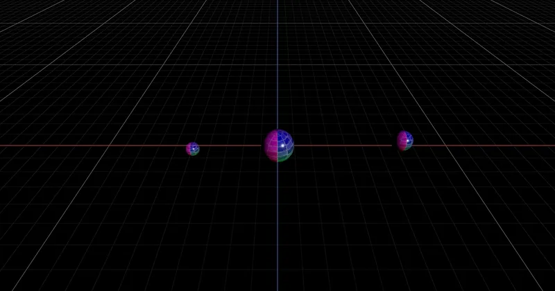

3D > Objects & Geometry > Coordinate Transformation
worldToLocal / localToWorld - RedGPU WebGPU Example
Tests coordinate transformations between world space and local space.
월드 좌표와 로컬 좌표 간의 변환을 테스트하는 예제입니다.

3D > Objects & Geometry > Coordinate Transformation
Tests coordinate transformations between world space and local space.
월드 좌표와 로컬 좌표 간의 변환을 테스트하는 예제입니다.
